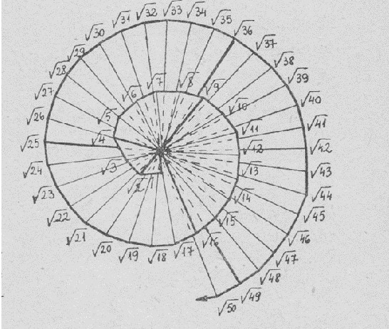

”Răspunde-mi Arhimede, cel plin de poveţie
Doar tu eşti capabil a spune
Care sunt corpurile a căror suprafeţe
Au acelaşi raport cu-a lor volume.”
Arhimede a fost numai un mare matematician al Siracuzei şi al antichităţii, dar
şi unul al tuturor ţărilor şi al tuturor timpurilor.
Pliniu l-a numit “zeul matematicii”.
Spirala lui Arhimede
Construirea numerelor iraţionale se poate face uşor cu rigla
şi compasul ,
folosind Teorema lui Pitagora, teorema catetei sau teorema
înălţimii.
